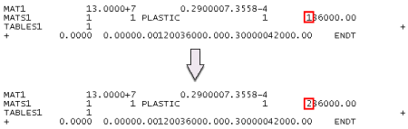
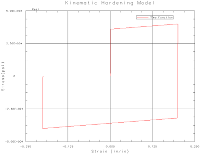
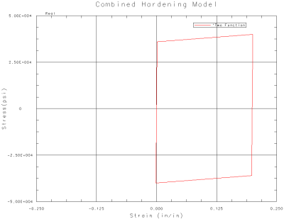

Hardening models project
Consider an axially loaded rod fabricated from a strain-hardening material with the same initial yield strength and strain-hardening characteristics in tension and compression. If the rod is stressed beyond the yield strength in either tension or compression, plastic deformation results.
Upon unloading, the length of the rod differs from the original length. Now suppose that the rod is stressed in the opposite sense. The stress level that yielding now initiates depends on the strain hardening model (hardening rule) used. Advanced Simulation supports three hardening rules.
-
Isotropic hardening (the default rule).
-
Kinematic hardening.
-
Combined isotropic and kinematic hardening (using a mixed hardening factor of 0.5).
Objective
Compare the stress-strain behavior associated with each hardening rule by modeling an axially loaded rod subject to the following loads:
-
From the free state, load in tension to 40,000 psi.
-
Unload to the free state.
-
Load in compression to 40,000 psi.
-
Unload to the free state.
The rod is fabricated from an isotropic, bilinear (linear elastic and linear strain hardening) material with an initial yield strength of 36,000 psi. Use the von Mises criterion (the default setting) as the yield function and assume that the stress level is low enough that necking does not occur.
Required data
|
Property |
Value |
|
Part |
plasticity_models.prt |
|
Solution sequence |
SOL 601, 106 Advanced Nonlinear Statics |
|
Idealization |
None |
|
Material |
Mass density 0.284 lbm/in3 Young’s modulus 30 x 106 psi Poisson’s ratio 0.29 Yield strength 36,000 psi Tangential modulus 20,080 psi |
|
Mesh |
CHEXA8 Element size 1 in |
|
Constraints |
Fix one end of the rod (allow for lateral expansion and contraction) |
|
Loads |
See note |
Notes
The problem involves material nonlinearity. Displacements and strains are small. Either SOL 601, 106 Advanced Nonlinear Statics or SOL 106 Nonlinear Statics - Global Constraints can be used. We used SOL 601, 106 Advanced Nonlinear Statics.
Use the Isotropic Material dialog box to define a new material. Enter the values for Mass Density, Young's Modulus, Poisson's Ratio, and Initial Yield Point (LIMIT1) that are listed in the Required Data table above. Notice that von Mises is the default for Yield Function Criterion (YF) and Isotropic is the default for Hardening Rule (HR).
For Stress - Strain (H), use the Table Constructor to create a Table Field that defines the bilinear material characteristic. Enter the following stress-strain values which were calculated from the Young's modulus, yield strength, and tangential modulus listed in the Required Data table:
|
Strain (in/in) |
Stress (psi) |
|
0 |
0 |
|
0.0012 |
36000 |
|
0.3 |
42000 |
After meshing, make the Simulation file the displayed part.
A time-varying force acts at the unconstrained end of the rod in the +Z direction. Because the cross section of the rod is 1 in2, a 40,000 lbf load produces a normal stress of 40,000 psi.
In the Force dialog box, use the Table Constructor to create a Table Field that defines the force. Enter the following values in the Table Field:
|
Row ID |
Time (sec) |
Force (lbf) |
|
1 |
0 |
0 |
|
2 |
10 |
0 |
|
3 |
20 |
40000 |
|
4 |
30 |
0 |
|
5 |
40 |
-40000 |
|
6 |
50 |
0 |
The first 10 sec are added to the force data to improve viewing of post-processed results.
After defining the force, edit the solution to:
-
Define 50 time steps of 1 sec each. In the Solution dialog box, under the Case Control tab, click Create Time Step Intervals. In the Modeling Objects Manager dialog box, click Create and enter 50 for the number of time steps. After creating the time step, in the Modeling Objects Manager dialog box, click Add to add the time step to the modeling object list.
-
Specify automatic time stepping and activate line searches as the strategy parameters. In the Solution dialog box, under the Case Control tab, click Create Modeling Object (Strategy Parameters). In the Strategy Parameters dialog box:
-
Under the Analysis Control tab, from the Automatic Incrementation Scheme (AUTO) list, select ATS.
-
Under the Equilibrium tab, from the Use Line Searches (LSEARCH) list, select Yes.
-
Before solving, rename Solution 1 to Isotropic Hardening.
Expected Results
Use the Nonlinear Stress - Element-Nodal and Nonlinear Strain - Element-Nodal results to create a graph of stress versus strain (both in the axial direction).
For a detailed description of how to create the graph, see the Display nonlinear analysis results activity.
|
Note |
If the applied force is distributed evenly over the unconstrained end of the rod, the choice of node to obtain data to graph is arbitrary because the stress and strain will be uniform throughout the rod. |
 |
Isotropic hardening model
For isotropic hardening, the yield strength in compression increases by the amount the material strain hardens in tension. Rerunning the model such that the compressive stress increases to 42,000 psi shows that yielding in compression now initiates at 40,000 psi.
To specify kinematic and combined hardening without having to create additional FEM files, you can clone the Isotropic Hardening solution twice and edit the corresponding NX Nastran input files manually. You can access the input file by selecting Write, Edit & Solve Input File from the Solve dialog box. Upon exiting the Solve dialog box, the input file is written and opened in a text editor. At this time, you can edit the input file and save the changes. The solution sequence resumes automatically once the input file text editor is closed.
-
Rename one of the cloned solution Kinematic Hardening. To specify kinematic hardening for this solution, edit the input file as follows:

-
Rename the other cloned solution Combined Hardening. To specify combined hardening for this solution, edit the input file as follows:

Note
The TABLES1 card is eliminated.
|
Tip |
Take special care to maintain the eight-space per field format of the input file. |
|

|
Kinematic hardening model
For kinematic hardening, the yield strength in compression decreases by the amount the material strain hardens in tension. In this case, the material strain hardened from 36,000 psi to 40,000 psi in tension and the yield strength in compression decreased from 36,000 psi to 32,000 psi.
|

|
Combined hardening model
For combined hardening (using a mixed hardening factor of 0.5), the effects of isotropic and kinematic hardening offset one another and the yield strength in compression is unchanged.
|
Note |
The above conclusions are applicable to this elementary uniaxial stress state and may not be applicable to a more general stress state. |
Completed project
For your reference, a completed model for this project is located in the ..\projects\solved_project_models folder.